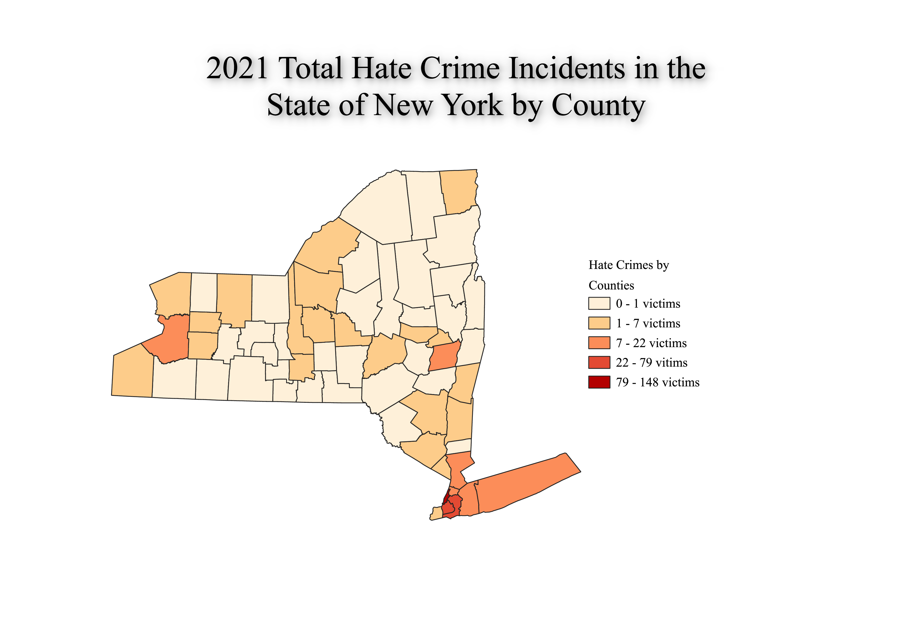

Homework 7
Hey! Welcome to my Homework 7 page.
For this particular choropleth, I decided I wanted to analyze
hate crime rates in the state of New York. By now, you probably know I am partial to doing maps regarding New York as that is where most of my extended family resides, and where most of my family grew up. Additionally, I am planning on moving to NYC after graduation, so I was curious what statistics I would be able to find regarding New York. This map is comprised of data regarding the total incidents labeled as "hate crimes" in New York from the year 2021. The data went back all the way until the early 2010s, but I decided I wanted to analyze the most recent dataset to get a better understanding of the political tolerance climate in New York. I cleaned the CSV to only showcase the total incident count, and although there were seperate totals for victim count, I decided for the sake of visualization it would be easier to showcase incidents rather than victims. At the bottom of this page you will be able to access the Shapefile I utilized, as well as my cleaned CSV and the location of the original dataset. Take care!

Data used for this project
CSV dataset
Link to shapefile
Link to original data